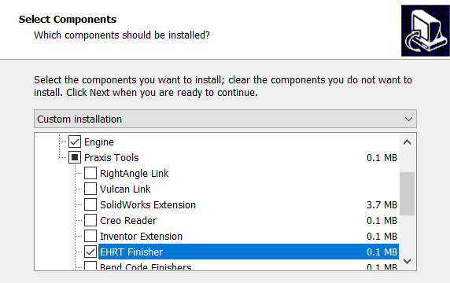
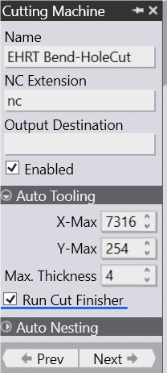
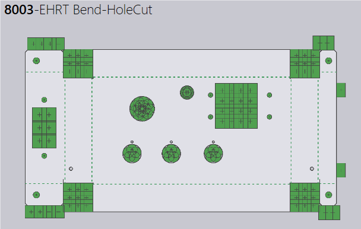

Cut Finisher for EHRT Machines
Praxis applies the “Cut Finisher” for EHRT machines after the tooling operation. The changes have been applied both to Praxis as well as the EhrtBusbarTool. To enable this:
- Select EHRT Finisher from Praxis Tools during the installation. This installs the EHRT external tool to the MetaCAM folder. 
- Install EHRT machines and run machine settings for which you want to enable the EHRT external tool and check Run Cut Finisher option under the Auto Tooling settings. 
- Now upload/retool a part and check the tooling status in the simulation page. 